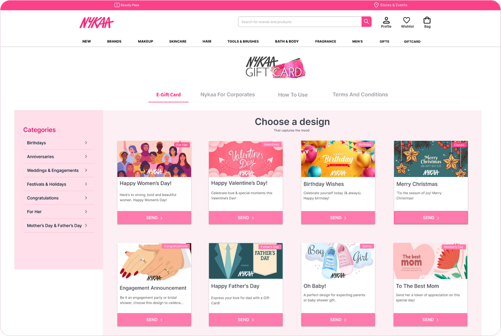

The redesign

From a maze to a path.
We redesigned two screens around the problems we found. Flip each one between before and after.
Choosing a design

- No filter by occasion or price
- Flat, generic card graphics
- Light grey tags that are hard to read
- 1A category menu on the left, sorted by occasion
- 2A visual card layout built around gifting occasions, for quick picks
Filling in the details
- Unclear whether you can type any amount or must pick one
- Policy notes in tiny grey text at the bottom
- 1Type any amount from ₹250 to ₹10,000, or tap a preset
- 2A clear highlight that gift cards can’t be cancelled or modified after purchase